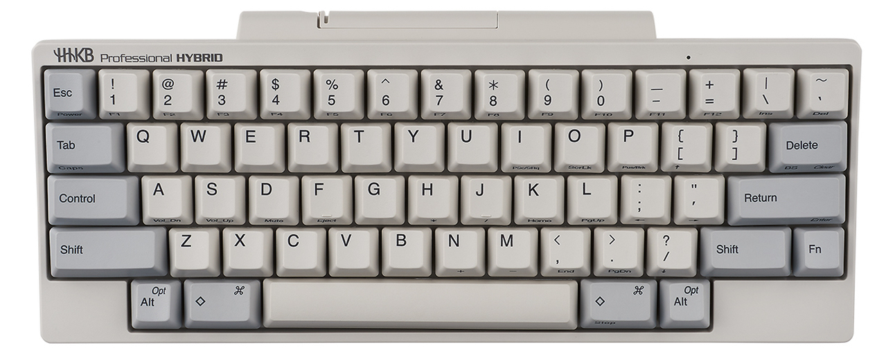

HHKB 使用感受
因为看别人写了 HHKB 用后感，再加上这玩意本来争议也比较大，所以自己也写一写。所有文字谨代表个人观点。
评价一把键盘，要从什么方面开始说呢？
1. 外观 & 布局
HHKB 应该叫复古风，整体灰白色的设计让人想起两千年。就像英特尔奔腾处理器为了摩登时代，轻松一下 Windows 98，那一年的人们大概不会想到，手里“老土”的键盘设计，会在二十年后备受追捧。也正是因此，HHKB 和现代精致的 CNC 切割艺术品放在一起显得格格不入。不过我也不是时尚人士，随便点评两句就得了。
这里插一句，其实最近键盘的复古风已经追溯到七十年代了。
更引起争议的，是 HHKB 这与通行标准大相径庭的布局。现代键盘的布局，大多以 IBM Model M 作为蓝本，在此基础上添加修饰键（Windows 或 Command）。而 HHKB 的布局，则是把原有的 Caps Lock 键替换为 Control 键，同时将 Backspace 键一分为二，分给了反斜杠和反引号，自己则下移，放置在了原反斜杠键的位置上。左右下角留空，同时取消了方向键。

Figure 1: HHKB 布局
人们对此的态度则是见仁见智，喜欢的人爱不释手，讨厌的人说它离经叛道。我反正是已经沦陷，顺带着把我其他的键盘都改成了这个键位。
2. 手感
静电容就是高级薄膜， 此话不假 。从结构来看，给静电容轴体提供手感的部分是胶碗和弹簧，和薄膜一样，最多只是因为没有物理接触，比后者寿命长一点罢了。
我用过青轴和红轴，也体验过别人的茶轴。对于我个人而言，我更喜欢段落轴体，所以红轴肯定是排最末尾，黑轴也不用想了。我给 Anne Pro 2 配了青轴，但是使用几个月之后我还是习惯不了那样 Click 的手感，过于像鼠标里的微动开关了，最终送人了事。最终还是这把静电容的 HHKB 用得最多，怪不得都说这是把退烧键盘，我也忒不幸，刚发烧就退烧了。
但是买键盘的想法总还是有的，下一把可能是茶轴，也有可能是其他新兴的轴体，比如 ttc 月白轴之类的。也想买一把 HHKB Lite，感受一下同个厂家薄膜和静电容到底有什么不同，之前用的薄膜键盘大都是公司学校的办公键盘，为了中标而故意出的廉价产品，键程短、手感硬，很难说有好的体验。
3. 续
买了 HHKB Lite 2，它令我非常失望。我再也不对薄膜键盘抱有任何幻想，也不再相信静电容是高级薄膜。
听闻 BOX Hako Violet 的手感酷似静电容，勾起了我攒键盘的欲望。但我为什么要用机械轴体再造 HHKB 之身呢？没准算下来也不比一把 PFU 制造便宜。
4. 再续
想起一件事来。惯用的宣传语是 PBT 键帽不会打油，日本制造的 HHKB 也精工细作，这话还是言过其实了。
从开箱后算，大概两个月，或是三个月，具体的时间我不清楚了，这把键盘就开始有空格异响的问题。原因是空格键的注塑工艺不怎么样，键帽和下面平衡杆不能很好地契合，让空格键变成了跷跷板。在它出现这个毛病之前，我都是习惯用左手拇指敲空格，后来为了避免金属撞击塑料的声音折磨我的耳朵，改成了右手。
还是从开箱后算，到现在（2022 年 4 月），它的键帽已经泛起了微弱的打油痕迹，特别是 J 键。其实我用 Vi 的时间不是很多（最后还是学了），但为什么唯独 J 打油最严重呢？不得而知。